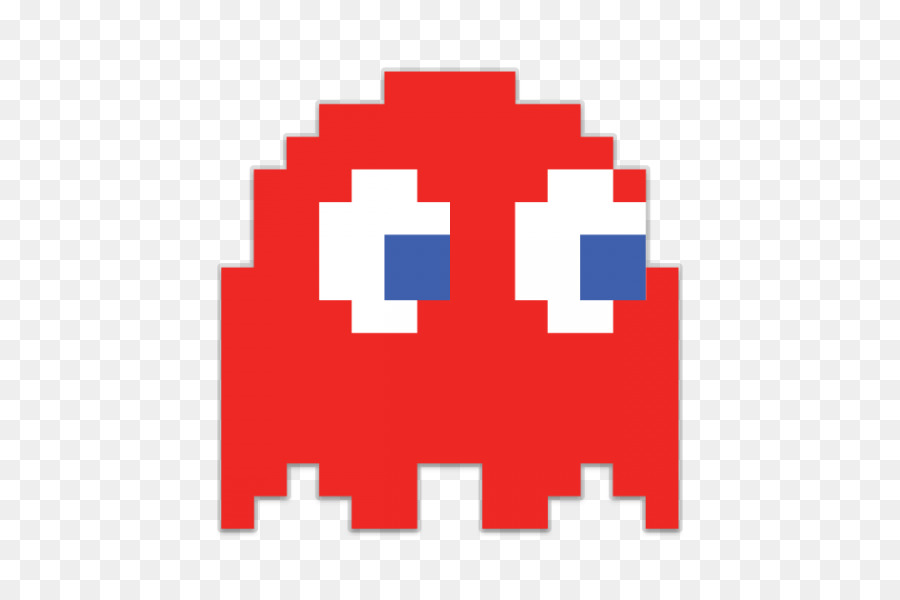
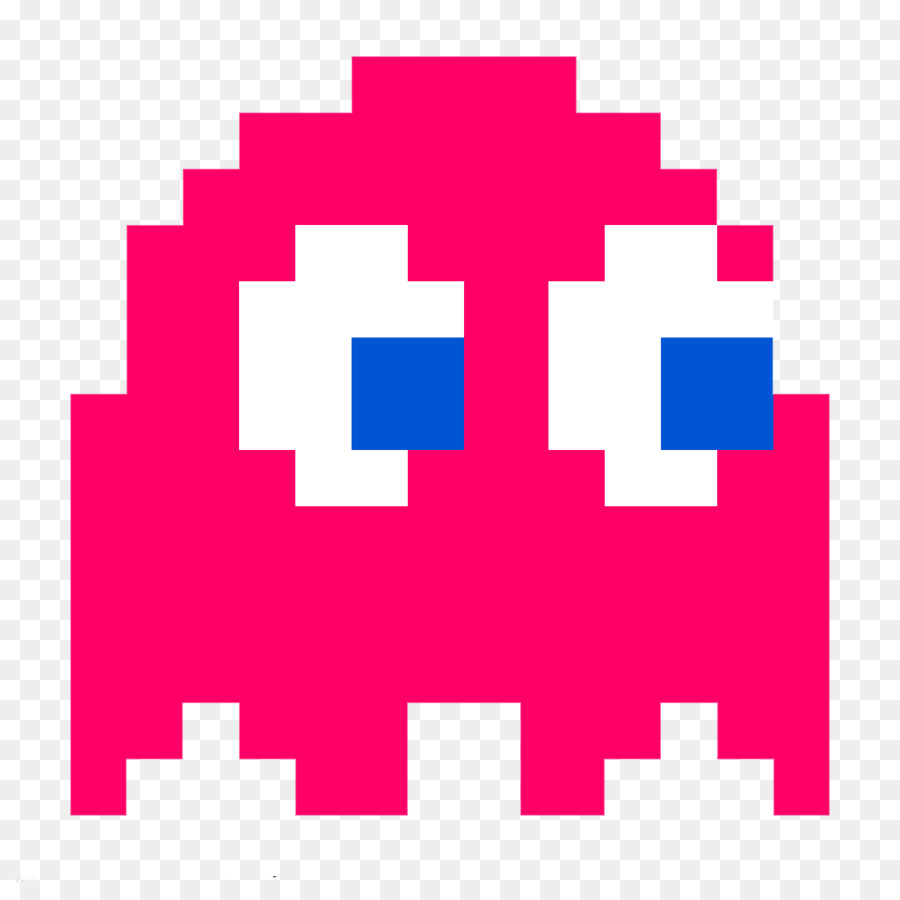
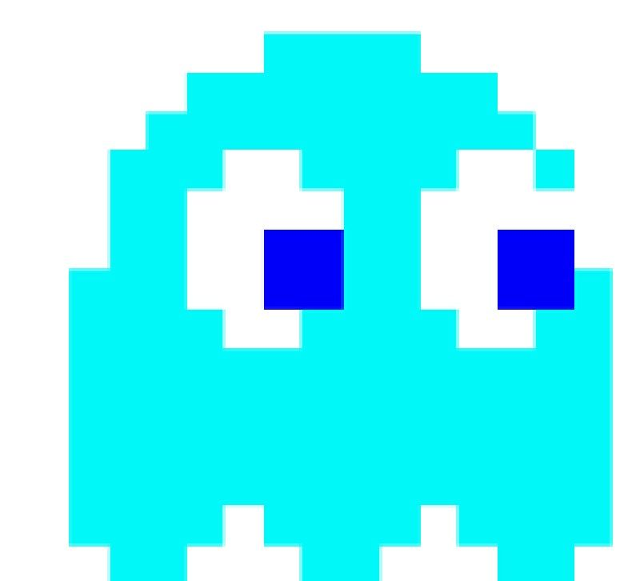
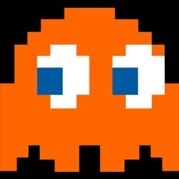

ENEMIGOS
Blinky: Es el líder de los fantasmas siendo el más listo y más malvado, su primera aparición fue en Pac-Man de 1980 como fantasma rojo siendo el más rápido y letal. Es el archienemigo de Pac-Man aunque en algunos juegos es un peón de los verdaderos villanos (En Pac-Man World es toc-Man, en Pac-Man World 2 es Spooky y unieron sus fuerzas en Pac-Man World 3 contra Erwin, ha aparecido en todos los juegos de Pac-Man y en Mario kart Arcade GP y Mario kart Arcade GP2.

Pinky: Es la segunda fantasma y la única chica del grupo, su primera aparición fue en el Pac-Man original como fantasma rosa, revelando que es mujer. Curiosamente en la serie de televisión de 1982 Pinky es hombre, pero en los videojuegos no y tampoco es muy enemiga de Pac-Man aunque se cree que sí de Ms. Pac-Man.

Inky: Es el tercer fantasma y es celeste siendo uno de los menos importantes ya que en algunos juegos no aparece o es reemplazado por otros, aunque en otros sí tiene relevancia en el juego, por ejemplo en Pac-Man World 2 es un jefe y en Pac-Man World 3 es secuestrado por Erwin y también sale en Pac-Man World Rally.

Clyde: Es el cuarto fantasma, siendo el más tonto e incompetente de los 4 y es color naranja, a pesar de ser así se muestra muy útil y capaz siendo servidor de Blinky y muy unido a él, ya que ha aparecido en todos los juegos excepto en Pac-Attack y Pac-Man Vs.
